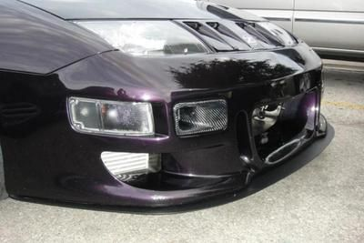

-
Hola, i am in quest for information beyond whats been covered in red's site and what i've been reading here on a few threads.
well....no thats a lie, but i realy just wanted a few insights on what i was planning to do.
now im not looking for much HP 300-400 rwhp max. A lot of guys here are running t3 and hx turbochargers, i realize they have the big bang high end HP w/ a nice powerband and are much more cost effecient than gt serries but i am trying to be realistic with what i am building this engine for so here are my plans on the vg.
1991 vg30e 9:1 compression non turbo m30 engine
z32tt maf
walbro 190 or 255 fuel pump
fmic
custom t3 top mount manifold w/ turbo back
external wastegate re-routed to dump
dsm 440's injectors
JWT reflash ecm
fpr
jwt cams( havent thought of which ones, but leaning torward mid range pickup)
i am building the engine for drift in my m30. i have had experience with building engines like ka24 and ca18 but never vg. aware that characteristics are different so i am taking that into consiteration.
i am looking for verry quick spool up, i'm talking spool arround 2,5-2,800rmp and full MODERATE boot at arround or befor 3500 rpm
not doing much to the block besides balanced bottom end w/ pistons and rods. cometic h/g. cams up top w/ adjsutable gears. want a good 7-7,500 rpm range rev out of it.
let me know if im on track with this guys, i am open to critizism but no flamers.
was thinking of some garette t3 turbochargers, but now leaning torwards something i have experience with. gt serries turbo i ran on my ca18 (hks gt2510) cost me arround 900 new JP. spooled arround 2600rpm and full boost (14psi) arround 3500rpm compleetly stock engine just bolt ons. put 240 rwhp. on a 1.8. turbo puts out a max of 300hp.
something similar to that turbo size would be a gt2530 or gt2540, then goes gt2835 and so on and so fourth.
what are you opinions with the turbos stated above. again im looking for moderate power on moderate boost for the mildly build 9:1 comprssion vg. were talking nothing above 14psi or so! -
garett bb turbos are pretty much the best out there. If its in your budget, just get one the correct size for you application.Chuck Stong
300+ Parts and Performance owner
http://www.300-plus.com
2002 ZCOT president and always active member -
First off, those turbos you mentioned are way too small to try and coax 400 hp out of. Second, If you only want 400, you would do better by leaving the bottom end stock and putting that monies towards some good headwork, and should be good to 7000rpm. Any revs above that and you would want the bottom end work you mentioned and good port work.
Third, you aren't going to get 400 @ 14psi with anything other that a large, laggy turbo. Fourth, stock head gaskets are fine.
With that said, I made 320hp @ 10psi on a 3.3 with headwork, mild cams,
gt3076r, stock tune minus 3 degrees and upped fuel pressure with full boost by 2800rpm.
http://www.ibconceptions.com/blackhawk/Aaron33LDyno.jpg
You could expect similar #s on a 3.0 with a quality tune, headwork and cams with the gt3076r.imagination is a virtue -
Alright, a gt2530 is good for 340HP, gt2540 is good for 360'sih, the 2835 is a 400HP turbo , well thats on max boost.craZed wrote: First off, those turbos you mentioned are way too small to try and coax 400 hp out of. Second, If you only want 400, you would do better by leaving the bottom end stock and putting that monies towards some good headwork, and should be good to 7000rpm. Any revs above that and you would want the bottom end work you mentioned and good port work.
Third, you aren't going to get 400 @ 14psi with anything other that a large, laggy turbo. Fourth, stock head gaskets are fine.
With that said, I made 320hp @ 10psi on a 3.3 with headwork, mild cams,
gt3076r, stock tune minus 3 degrees and upped fuel pressure with full boost by 2800rpm.
http://www.ibconceptions.com/blackhawk/Aaron33LDyno.jpg
You could expect similar #s on a 3.0 with a quality tune, headwork and cams with the gt3076r.
i dont plan on maxing the turbo i choose out! i want a little building room in case i wanted a few more ponies out of hte engine at the click of hte dial!
on 14 psi i'm not expecting anything more than 300 or so wheel.! I said 14 psi becasue that is what i want to be runnig when everything is put together but i'm not counting on boosting anything over that until i do build the bottom end and do headwork! 300-400rwhp is what i plan to achieve on the turbo of my choice at MAX boost!
to clear that up since you seem to be a little lost in what i was explaining. partialy my error though.
anyhow. back on subject.
i will contact garrette, fullrace and a few other turbo vendors i know of that helped me with my last turbo on the ca18det. they helped me chooce a suitable turbine for that engine and prety much got it right on target . -
I have the same goals and ultimately went with the GT3071R from ATP with the divided housing. Spoolup is similar to stock
Try to find something BB and with divided housing. These engines enjoy it. For drift you NEED quick spool. You don't need power really, so cheap out there or save up for the best. Building a drift car is all about having a broad usable powerband.sigpic -
Looks like we have the same goals as far as hp. I just cant justify 1000 for a turbo…
-
then how will you justify the money for suspension?vagabond wrote: Looks like we have the same goals as far as hp. I just cant justify 1000 for a turbo… -
....and lsd, and engine management, and a good seat?sigpic -
Look at this and stick something similar in your car. You have seen this pic before.
[/img]"If you don't hold it....you don't own it" -
Very nice setup! What size turbo is that? -
Really you don't need a broad powerband for drift. Most of the time is spent at very high RPMs. Look at most the corollas… they have very narrow powerband and still do very well.Butter wrote:
For drift you NEED quick spool. You don't need power really, so cheap out there or save up for the best. Building a drift car is all about having a broad usable powerband.
If he wants a cheap turbo, get an HX30, but I think he is very far away from the point where he needs to select a turbo. First you need suspension (coil-overs are a must), cheezy and huge japanese wheels, a limited slip (or weld the stock one), a wing, cheezeball body kit, sparkle paint, a copy of fast and the furious (for driving pointers), and about a million other things I can't even think of.86 hardtop shell, 93 SC300 engine, 95 soarer bellhousing, 91 supra transmission, 95 Q45 differential hubs and driver's side axle, 1992 300ZX turbo driver side axle and calipers, 2004 350Z Rotors, 87 300ZX front end/hood, 1999 Viper radiator, 1992 Mustang throttle body. Lots of glue and tape to keep it all together. -
Not true. You need mid-high rpm power so you can have power (rpm) in reserve when running a shallow angle so you can stretch out short straights to the next corner. Something a corolla will have a tough time doing.Really you don't need a broad powerband for drift. Most of the time is spent at very high RPMs.
Watch this vid of a guy trying to link the downhill section at HTM.
Listen to the engine.
http://www.youtube.com/watch?v=0SPvpZa9JHY[/video]] sigpic
sigpic -
Re: turbo TURBO SNAIL'er. t3 and gt turbine debate drift/street
Drifting does not require a specific range of rpm power. it requires consistant usable power in the givven rpm's. which usualy is up to the drivers preferences. I dont like high rpm drifting, i use a lot of gears, clutck kicking and ebrake initiations, along with feint and trail braking. brake dirft sometimes but with the ammount of camber im running its not safe at high speeds.
right now " on my m30" i have
kts coilovers 10/8 kg
17x9+15 front
17x10+12 rear
tein tesion rods
tein s13 tie rods
s13 lca & knuckle
welded rear solid strut bar
s13 front strut bar
STOCK oem welded diff " aka weldloc 2way)
soon to have custom 6 pt cage and bride seat from my old s13.
i dont think i realy need to focus on suspension. i need to focus on geting this turbo swap compleete.
plan on running a fidanza flywheel and act 6 puck clutch. stainless lines for the t3 top mount turbo. jwt ecu. 1 piece aluminum driveshaft. custom aluminum engine & trans mounts made by me SPL.
at this point in time i am not shooting for any specific ammount of power, i realy just want to get it together with what i want to run. i wont be able to boost much on the stock m30 vg30et 9:1 compression engine so keeping it within working order is a must for now until i find another 9:1 block to rebuild. so lets be practical with what i need to accomplish. HX sounds like a great turbo expecialy for hte price but its not what im looking for. another memeber i am quoting said that he got a custom t3/t4 that spooled verry quickly. As this engine does not rev much stock i need to optimize my mid range and low end. seeing that i cant go over 6,000 rpm i need to make all lower end power usable.
with previous engines ive drifted i compleetly rely on mid range pick up and high end peak to hold drifts, but with this heavy thing i need raw power and low/ to mid range stomping power, being able to initiate 2'd and power through 3'rd still mid drift.
hope that makes things crystal clear. -
Re:
exactly,Butter wrote:Not true. You need mid-high rpm power so you can have power (rpm) in reserve when running a shallow angle so you can stretch out short straights to the next corner. Something a corolla will have a tough time doing.Really you don't need a broad powerband for drift. Most of the time is spent at very high RPMs.
Watch this vid of a guy trying to link the downhill section at HTM.
Listen to the engine.
http://www.youtube.com/watch?v=0SPvpZa9JHY[/video]]
-
Re: turbo TURBO SNAIL'er. t3 and gt turbine debate drift/street
The HX35 is what most people use and is likely too large for what you want but the HX30 is supposed to be closer to a T3/T04E 50 trim, which matches pretty well with the VG. It should be able to easily spool in the range you want it to and give you the power you want. The only major downside to them is that they are a little hard to find. When you do find them they are quite affordable though.HX sounds like a great turbo expecialy for hte price but its not what im looking for.
For a GT, you can get a GT3076 with a twin scroll turbine housing from http://www.himniracing.com as well as other I'm sure. Its a v-band .78 housing if I remember correctly. The 3076 matches with the VG really well from what I've seen. If I didn't have the HX35 I'd personally go with one of those as it should give a very broad power band.

{kind=link}
Copyright © 2006–. All rights reserved. Privacy Policy